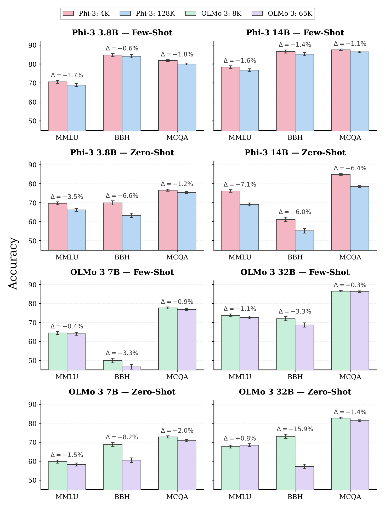
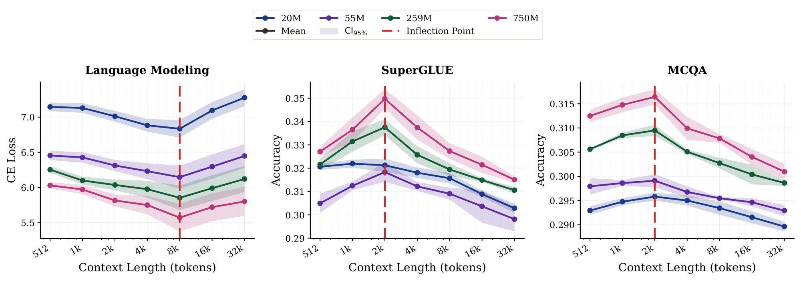
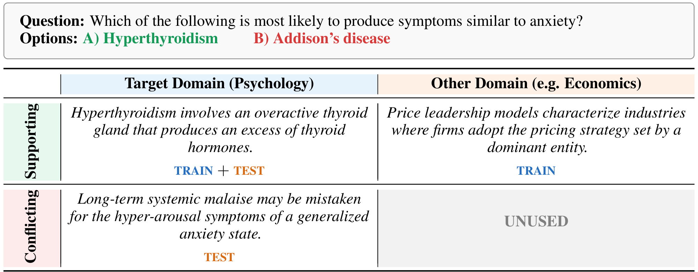
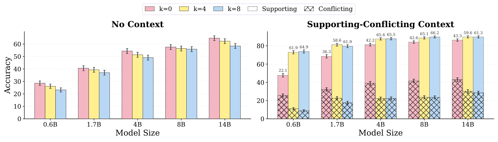
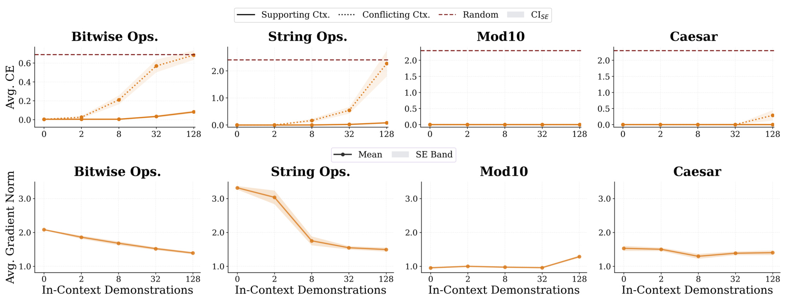
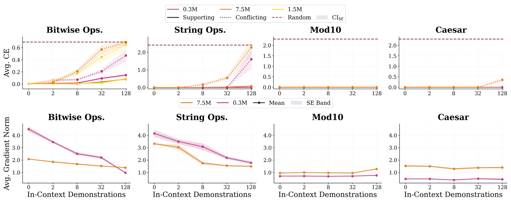
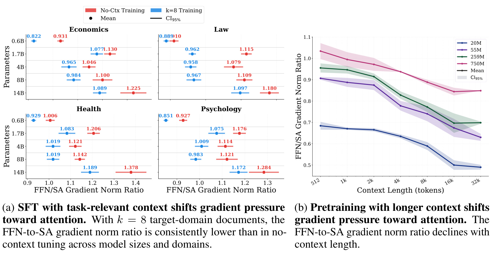
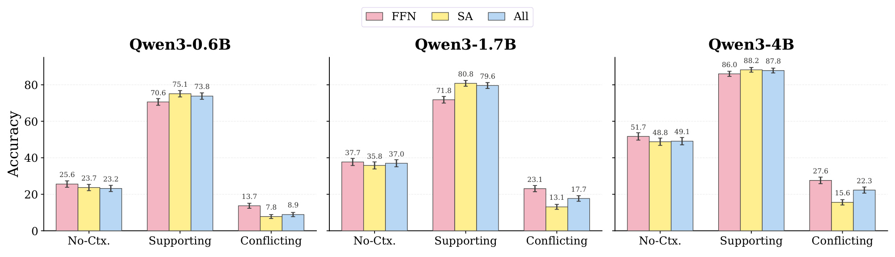
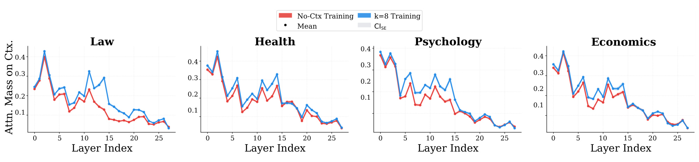
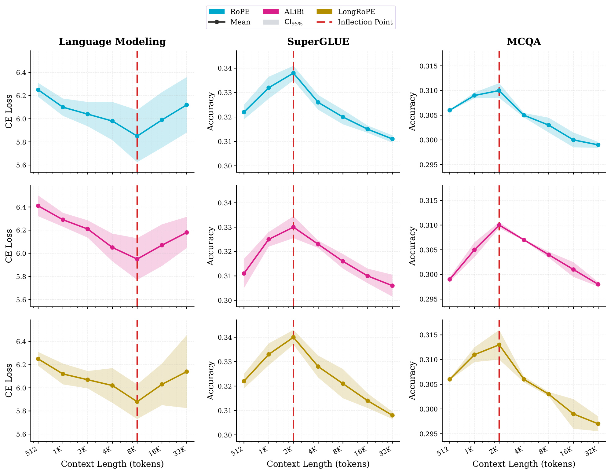

Information Abundance Paradox：长上下文训练如何削弱参数知识
《Information Abundance Paradox: Long-Context Training Undermines Parametric Knowledge》由约翰霍普金斯大学的 Arda Uzunoglu、Benjamin Van Durme 与 Daniel Khashabi 完成，于 2026 年 8 月 12 日提交 arXiv。论文把长上下文问题从“模型能否在推理时读得更长”推进到“训练时读得更长，会让模型把知识存在哪里”。论文入口为 arXiv:2608.12218；官方代码仓库已从 arXiv HTML 论文页核验。本文将 Information Abundance Paradox 简称为 IAP，并把论文所说的 context addiction 译作“上下文成瘾”。
长上下文训练并不只是给模型增加证据：当训练上下文已经提供了足够多的任务相关信息时，模型可能失去把知识内化进参数的动力，转而学会依赖上下文。于是，一旦推理时上下文缺失、无关或具有误导性，长上下文训练反而会削弱模型可独立调用的参数知识与鲁棒性。
1. 背景和问题
长上下文通常被当成一条近乎单调的能力扩展轴：窗口从 4K 扩到 128K，模型就能同时看到更长的文档、代码仓库和交互历史；如果效果没有继续提升，直觉上会先怀疑自然长文档不足、位置编码外推失败、注意力计算太贵或训练配方不成熟。IAP 指出，这种解释默认了一个更深的前提——上下文只是中性的“数据输送管道”。但对下一词预测而言，同一条可复用规律至少有两条求解路径：模型可以把规律压缩进权重，在没有额外证据时也能调用；也可以学会在输入里寻找并组合证据，把答案留给当次上下文决定。论文分别称为 parametric internalization 与 contextualization。
二者都能降低训练损失，却不是等价能力。参数内化形成可跨样本复用的知识和规则，代价是训练必须把稳定规律写入权重；上下文化则把输入当作外部工作区，特别适合事实会更新、任务由示例临时定义、证据不值得永久记忆的场景。问题在于，训练目标只奖励预测正确，不会主动要求模型在“权重”和“上下文”之间保持某种冗余。当训练上下文持续给出容易利用的相关信息时，沿注意力通道读取证据可能比在权重中内化规则更容易，于是最小损失路径会偏向上下文化。IAP 所谓“信息丰度”不是语料总量大，也不是语料熵高，而是单个训练上下文里与当前预测有关的信息足够充足。
论文把这种偏移的行为表现定义为上下文成瘾：模型在支持性上下文存在时表现很好，但在上下文被移除或被冲突证据替换时明显退化。这个定义很重要，因为它没有把“多看上下文”本身当成缺陷。若应用始终能提供完整、可信、低延迟的证据，更多上下文化可能恰恰是优点；只有当模型失去了没有证据时的参数后备能力，或过度服从错误证据，代价才显现。作者因此要检验的不是“长上下文模型是否总更差”，而是训练窗口和训练信息相关性是否会改变模型的求解模式。
论文先用已发布模型给出动机，而不是直接从自训练小模型开始。Phi-3 的 4K/128K 版本与 OLMo 3 的 8K/65K 版本在相同家族内形成长短窗口对照；长版本接触了更多、更长的数据，却在 MMLU、BBH、MCQA 的少样本与零样本评测里普遍落后。附录的单侧两比例检验显示，23 个对照里有 20 个长上下文版本显著更差。这个观察不能证明 IAP——不同发布版本还可能有训练阶段、数据混合和后训练差异——但足以说明“只要长数据质量足够，长窗口不会伤害其他能力”不是无需检验的公理。

Figure 1 要按“同一模型家族内的长短窗口差值”阅读。上半部是 Phi-3 3.8B/14B，下半部是 OLMo 3 7B/32B；每个规模又分 few-shot 与 zero-shot，并在 MMLU、BBH、MCQA 上比较短窗口和长窗口。绝大多数差值为负，其中 OLMo 3 32B zero-shot 的 BBH 差值达到 -15.9%，Phi-3 14B zero-shot 的 MMLU、BBH、MCQA 也分别显示 -7.1%、-6.4%、-6.0% 的明显缺口。少数接近零或略正的项提醒我们不要把图读成“任何任务必然退化”，但跨家族、规模和提示条件的方向一致性构成了强动机。更关键的是，它把评测放在短输入或闭卷条件下：图并未否认长版本在真正长输入任务上的价值，而是在问它为这种能力付出了什么参数知识代价。
对推荐、RAG 和 Agent 系统，这个问题非常现实。训练时可以给模型拼接完美检索文档、用户画像、历史轨迹和工具结果，线上却会遇到召回缺失、陈旧画像、广告噪声、权限裁剪甚至提示注入。若模型只在“证据总是充足且正确”的训练世界里学会工作，离线有证据评测会持续变好，却可能掩盖闭卷后备能力和冲突证据鲁棒性的下降。因此 IAP 的贡献不是一句“别做长上下文”，而是提出一组应该同时测量的能力面：有支持证据时能否利用、无证据时能否独立回答、有冲突证据时能否抵抗，以及这种行为是否能在训练动态和模块干预中找到一致机制。
2. 方法
2.1 把信息丰度拆成两种可控训练条件
作者没有试图用一个实验同时回答所有问题，而是把自然预训练与监督微调拆开。预训练中，“某段信息是否与当前 token 相关”很难精确标注，于是用连续文档窗口长度作为代理：从 Project Gutenberg 过滤出至少 65,536 token 的文档，固定 10B 训练 token、模型初始化、优化器、随机种子和约 1.05M token 的全局 batch，在 20M、55M、259M、750M 四种 Llama-2 架构规模上扫描 $W\in{512,1024,\ldots,32768}$。所有设置训练 9,537 步，因而 token 与更新次数配平；但长窗口注意力更贵，所以这里不是 FLOP 匹配实验。这一路径回答“连续上下文变长后，闭卷和短输入能力是否出现非单调变化”。
SFT 中，作者能够直接操控相关性，因而固定长度而不再把长度与信息混在一起。Qwen3-0.6B、1.7B、4B、8B、14B 分别在 MMLU-Pro 的 Health、Economics、Law、Psychology 四个领域用 LoRA 微调；每题上下文固定为八篇文档，用 $k\in{0,4,8}$ 表示其中目标域文档数，其余 $8-k$ 篇来自配对的其他领域。训练只对答案文本 token 计算损失。测试再拆为三种条件：支持上下文指文档支持正确答案；冲突上下文指文档以看似合理的方式支持一个错误答案；无上下文只保留题目与选项。这样，$k$ 控制训练时“相关证据丰度”，测试条件控制证据的可用性和正确性；具体文档构造示意留到实验章与主结果一起阅读。
2.2 参数信息前沿：长上下文扩大可行解，而非保证参数记得更多
理论部分把上下文与权重视为任务信息的两条通道。令潜在任务变量为 $\tau$，上下文大小为 $k$ 时的输入输出为 $(X^{(k)},Y)$，训练随机性诱导的权重为 $W\sim\Pi(\cdot\mid\tau)$，预测器为 $q_k$。首先定义给定上下文下的期望任务风险：
符号解释：$k$ 是可访问上下文大小，$\Pi$ 是给定任务后训练权重的分布，$q_k$ 是能够读取 $X^{(k)}$ 与 $W$ 的预测器，$\ell$ 是任务损失，$Y$ 与 $\hat Y$ 分别是真实目标和模型预测。该式只负责定义“达到多好”，并不区分答案来自权重还是输入；为区分两条信息通道，论文接着用权重和任务之间的互信息度量参数里保存了多少任务特异信息。
符号解释：$H(\tau)$ 是观察权重前对任务的不确定性，$H(\tau\mid W)$ 是看到训练后权重后的剩余不确定性，二者之差 $I(W;\tau)$ 表示权重对潜在任务的识别信息。它是理论量，论文没有直接从神经网络权重估计该互信息；后文的梯度与行为实验只是与这套解释一致的机制证据，不能替代直接测量。在此基础上，核心定义才是风险阈值 $\rho$ 下的“参数信息前沿”。
符号解释：$\mathcal I_k(\rho)$ 是允许使用 $k$ 长上下文时，为把风险压到 $\rho$ 以下而至少需要存进权重的任务信息；$\inf$ 对所有训练权重通道与预测器取下确界。直觉上，如果上下文已经告诉预测器大量关于 $\tau$ 的线索，同样风险目标就可能用更少的参数信息达到。这里的“可能”非常关键：定义描述最省参数信息的可行解，不等于实际优化器一定选择它。为比较长短上下文，作者进一步假设短窗口可以由长窗口投影得到。
符号解释：$X^{(m)}$ 是较长上下文，$T_{k,m}$ 选择其中与短窗口对齐的 $k$ token 子窗口，a.s. 表示该嵌套关系几乎处处成立。这个假设对应把同一 packed token stream 切成不同固定窗口的预训练管线；若两个窗口来自不同数据分布，证明不能直接套用。因为 $m$ 上下文预测器总能先执行 $T_{k,m}$ 再模拟任意 $k$ 上下文预测器，长上下文的可行解集合至少不更小，由此得到下面的单调性命题。
符号解释：$m$ 与 $k$ 分别是长、短上下文，$\mathcal I$ 是达到相同风险阈值所需的最少参数任务信息。该不等式证明的是“长上下文允许一个更少依赖权重的同风险解”，而不是“长上下文训练必然忘记更多”。要从可达性走到实际 SGD 行为，仍需要后面的复杂度、梯度分配和因果干预证据。
2.3 何时出现上下文成瘾：较低复杂度的上下文解
作者用四类合成规则任务寻找触发条件：一元 bitwise、字符串操作、mod10 算术和 Caesar cipher；模型规模为 0.3M、1.5M、7.5M。每个训练样本由若干 input-output demonstrations 加最后一个 query 组成，只对最终 query 的输出计算损失。测试维持与训练相同的演示数，但把演示分为遵循正确规则的 supporting 与遵循一致错误规则的 conflicting。二者准确率差越大，模型越依赖当前 demonstrations 而不是参数里内化的规则。作者没有做 no-context 测试，因为训练只监督最终 query，骤然缩短序列会构成额外的分布外因素。为比较这些训练路径，论文使用梯度裁剪前的全局平均梯度范数作为复杂度代理。
符号解释：$T$ 是训练步数，$\theta_t^{(k)}$ 是上下文含 $k$ 个演示时第 $t$ 步参数，$B_t$ 是批次，$\ell$ 是最终 query 损失，$|\cdot|_2$ 是把所有可训练参数梯度拼接后的二范数。较小的 $G_k$ 被当作较简单优化路径的比较性代理，而不是函数复杂度的严格等价量；因此实验要看它是否只在行为上出现 context addiction 的任务中同步下降。
2.4 从相关到因果：模块梯度与推理注意力
Transformer 的 FFN 常被关联到事实与任务知识的参数存储，自注意力则负责从上下文选择、路由信息。论文先计算逐训练步、逐模块类型的梯度范数；在同一架构内比较相对大小，以减少不同模块参数规模和绝对损失尺度带来的误读。按照论文文字定义写开，FFN-to-SA 比可表示为：
符号解释：$L$ 是层数，$g^{(\ell)}{\mathrm{FFN},t}$ 与 $g^{(\ell)}{\mathrm{SA},t}$ 是第 $t$ 步第 $\ell$ 层 FFN/自注意力梯度，$r_t$ 是单步比值，$\bar r$ 是跨训练步平均。架构和模块参数维度在比较内固定，因此比值下降可解释为相对更新压力从 FFN 向注意力移动；但它仍不是“知识确实存入哪个具体神经元”的直接测量。
相关性之后，作者做 module-restricted fine-tuning：在 $k=8$ 的相关上下文 SFT 中只更新 FFN、只更新 self-attention，或更新全部 LoRA 模块。若 FFN-only 更保闭卷能力、SA-only 更依赖支持上下文，这种主动操控就比观察梯度比更接近因果证据。最后，作者在支持上下文推理中测量答案 token 对预置文档 token 的注意力质量：
符号解释：$A^{\ell,h}_{q,j}$ 是第 $\ell$ 层第 $h$ 个头从答案 query 位置 $q$ 到 key 位置 $j$ 的归一化注意力，$\mathcal C$ 只含预置文档 token，排除问题、选项和已生成答案，$M^{\ell,h}_q$ 是该 query 分配给上下文的注意力质量。论文跨答案位置和样本求均值，再在每层取头的最大值，以捕捉稀疏专门头。这个“最大头”选择有诊断价值，也会放大少数头，因而应结合模块干预和行为结果共同解读。
3. 实验结果
3.1 预训练：收益不是单调的，拐点随任务输入长度移动
预训练评测包含三类测试床：LAMBADA、Penn Treebank、WikiSPAN 等语言建模数据集用交叉熵；SuperGLUE 测一般语言理解；ARC、CommonsenseQA、PIQA 等闭卷 MCQA 用长度归一化候选答案对数概率选项。评测不给训练文档上下文，因此更偏向检测模型通过权重保留的语言规律和知识。四个规模共享相同初始化与训练设置，多个随机种子求均值；20M 用五个种子，其余规模用三个种子。

Figure 2 的三面板给出最核心的非单调性。语言建模交叉熵先随窗口增大而下降，大约在 8K 达到最低，然后在 16K、32K 回升；SuperGLUE 与闭卷 MCQA 的准确率更早在约 2K 达峰，随后持续下降。20M、55M、259M、750M 四条规模曲线虽然绝对水平不同，却共享这一形状，说明增加容量至少在 750M 以内没有消除拐点。附录的分段回归在每个模型规模、三个测试套件上都确认拐点显著。需要避免把 2K/8K 读成普适最优窗口：附录逐数据集结果显示，PTB、LAMBADA、WikiSPAN 的平均输入越长，最佳训练窗口依次从 512、2048 移到 8192；合并 MCQA 和 SuperGLUE 后，五组拐点大约为平均样本长度的 24–25 倍。这更像训练窗口与下游信息跨度的匹配关系，而非一个固定常数。
计算代价还让“继续拉长”更难被视为免费保险。长短条件只做到 token/更新匹配，没有做到 FLOP 匹配；例如 259M 模型从 512 窗口的 27.90 GPU 小时增加到 32K 的 83.44 GPU 小时。20M/55M/259M 使用 A100，750M 使用 H100，所以不能跨规模直接比较 GPU 小时，但同规模内的成本趋势明确：性能越过中间最优后下降时，训练成本仍在上升。IAP 因而揭示双重风险——更长窗口不仅可能挤压参数能力，还可能用更多算力得到更差的短输入结果。
3.2 SFT：支持证据收益与无/冲突证据鲁棒性对冲
SFT 主实验固定八文档预算，把训练相关性与测试证据正确性拆成两个轴。目标域支持文档既可训练也可测试，其他域支持文档只用于构造 $k<8$ 的训练条件；目标域冲突文档只在测试时出现，“其他域冲突”不使用，从而避免同时改变领域与正确性。

Table 14 用一道心理学问题把两个轴解耦。目标域支持文档说明甲亢可能产生类似焦虑的症状，可用于训练和测试；其他域支持文档虽然语言自然，却与目标问题无关，只用于构造 $k<8$ 的训练条件。目标域冲突文档把推理引向错误选项，只用于测试；“其他域冲突”则不使用，因为作者要隔离目标域内证据正确性，而不是同时改变领域。表的价值在于说明 $k=0$ 不是没有 token，而是八篇都不相关；$k=8$ 也不是更长，而是八篇都相关。附录 Table 15 进一步显示，测试集支持上下文的总长度中位数在 170.5–201 token，冲突上下文在 163–190 token，四分位范围大体重叠，因此主差异更接近语义相关性而非长度。这个控制使后续支持、无上下文和冲突三种结果能够被放在同一因果问题下比较。
SFT 主结果把“窗口变长”进一步拆成“相关信息变多”。从 Table 16 的四领域平均值看，Qwen3-0.6B 在 supporting 条件下从 $k=0$ 的 47.7 升到 $k=8$ 的 73.8，但 no-context 从 28.6 降到 23.2，conflicting 从 25.6 降到 8.9；Qwen3-14B 的 supporting 从 86.3 升到 89.8，no-context 从 64.7 降到 58.4，conflicting 从 43.0 降到 28.5。中间规模也呈相同方向，只是个别端点不严格单调。blocked ordered trend 检验把四领域作为等权重复块：无上下文准确率下降在除 Qwen3-8B 外的四个规模显著，支持-冲突差在五个规模全部显著，合计 10 项中 9 项成立。

Figure 3 左面板应看 $k=0,4,8$ 三组柱在五个模型规模上的下降：训练相关文档越多，拿掉文档后的准确率越低。右面板同时画支持和冲突条件，$k$ 增大后支持柱维持或上升，冲突柱却显著更低，因而支持-冲突 gap 快速扩大。由于每次训练都保持八篇文档，Table 15 又显示支持/冲突文本长度相近，这个结果不容易用“模型只是不适应更短输入”完全解释。更合理的行为描述是：相关上下文让模型学会了一个更依赖证据的决策策略；证据正确时它有用，证据错误时同样的服从性变成脆弱性。
这组结果对检索增强系统尤其有警示意义。若只报告 oracle retrieval 或 gold evidence 场景，$k=8$ 看起来是明显改进；加入 retrieval miss、空上下文和 hard-negative evidence 后，排序可能反转。论文没有直接跑真实 RAG 检索器，因此不能把 MMLU-Pro 的生成文档结果外推为所有知识库系统都会退化。但它给出一种更好的评测矩阵：同时改变证据覆盖率和证据正确率，而不是只在支持性上下文上比较最终准确率。
3.3 较低复杂度路径：哪些任务会“成瘾”
合成实验是论文区分“所有长上下文都危险”与“当上下文提供更容易解时才危险”的关键。bitwise 与 string 任务随着 demonstrations 从少到多，支持-冲突差扩大；mod10 几乎不变，Caesar 只在最长设置有局部偏移。下排的平均梯度范数只在前两类上下文成瘾任务中稳定下降，而在 mod10/Caesar 中保持噪声级变化或略升。附录 Table 9 的单侧趋势检验支持这种分组，而不是所有任务统一下降。

Figure 4 上排的红色虚线是任务特定随机基线；bitwise 和 string 的 supporting/conflicting 曲线逐渐分离，意味着错误 demonstrations 越来越能改写模型答案。mod10 与 Caesar 的 gap 大多贴近稳定区域。下排正好给出配对机制：前两类 $G_k$ 随演示数下降，后两类没有一致下降。它支持的精确说法是“较低梯度范数路径与 context addiction 共现”，不是“梯度范数低就必然代表模型更简单或更差”。梯度范数受参数化、学习率和损失尺度影响；论文通过同任务内控制和跨任务方向对照增强可信度，却仍应把 $G_k$ 视为代理。上下两排的任务级对应关系比单看任意一排更有说服力。

Figure 11 把 Figure 4 从最大合成模型扩展到 0.3M、1.5M、7.5M。上排显示 bitwise/string 中不同规模的 supporting-conflicting gap 都随 demonstrations 增长，下排显示相应平均梯度范数下降；mod10/Caesar 仍相对稳定。更值得注意的是，大模型的 gap 增长更强：容量没有自动迫使模型把规则写入权重，反而让它更有能力利用上下文中的捷径。这里的“规模效应”只覆盖 7.5M 以内的合成 Transformer，不能直接等价到数十亿参数预训练；它的作用是证明 Figure 4 不是某个单一规模的偶然曲线，并为后续模块机制提供受控环境。三条规模曲线的相对顺序还提示，容量本身不是免疫上下文成瘾的保证。
3.4 梯度去向、模块干预与推理注意力形成闭环
模块级分析先观察更新压力。SFT 比较 $k=8$ 目标域文档与只看 question-answer 的 no-context 微调；预训练比较七个窗口。在 20 个 SFT 模型-领域组合里，19 个 $\overline r$ 显著降低；四个预训练规模也都随窗口加长而下降。也就是说，信息丰富的上下文并非只改变最终准确率，它还系统地改变哪些模块接收相对更强的梯度。

Figure 5 左侧四个领域面板中，蓝色 $k=8$ 点几乎总在红色 no-context 点的左边，表示 FFN/SA 梯度比更低；这一关系跨 0.6B 到 14B 基本稳定。右侧预训练曲线则显示，20M 到 750M 的比值都随 512→32K 窗口总体下滑，较长端降幅尤其明显。两种训练制度的数据、任务和模型不同，却指向同一相对梯度迁移，降低了某个 SFT 文档生成策略单独制造现象的可能性。但 FFN 和注意力并不是知识/上下文的绝对分区，二者都有混合功能，所以图应读作“优化压力重分配与假说一致”，而不是模块功能的排他证明。
为把相关性推进到因果，作者固定 $k=8$，只允许 FFN 或 self-attention 接受 LoRA 更新。Qwen3-0.6B 上，FFN-only 的 no-context 为 25.6，高于 SA-only 的 23.7；supporting 则 SA-only 为 75.1，高于 FFN-only 的 70.6；conflicting 中 FFN-only 为 13.7，SA-only 仅 7.8。Qwen3-4B 也类似：no-context 为 51.7 对 48.8，supporting 为 86.0 对 88.2，conflicting 为 27.6 对 15.6。这种方向交换比单纯梯度比更有解释力。

Figure 6 按模型规模分三组，每组再比较 no-context、supporting、conflicting。黄色 SA-only 柱在 supporting 条件通常最高，却在 conflicting 条件最低；粉色 FFN-only 柱则在无上下文和冲突上下文更稳。灰色 All 介于二者之间或接近最优一侧。它说明“哪个模块被允许学习”会主动改变模型对输入证据的依赖方式：只更新注意力更善于消费当前证据，也更容易被错误证据牵引；只更新 FFN 更保留无证据后备能力。干预只在较小 Qwen3 规模上做以控制计算量，因此因果方向可靠，规模外推范围仍有限。
最后，作者查看支持上下文推理时的逐层注意力质量。Qwen3-1.7B 在 Law、Health、Psychology、Economics 四域中，经 $k=8$ 相关上下文训练后的蓝线普遍高于 no-context 训练红线，差异集中在中间层；附录在 0.6B、8B、14B 上复现。Table 13 使用跨层最大簇校正的置换检验，避免把零散层差异当成显著簇。

Figure 7 的横轴是层索引，纵轴是分配给预置文档 token 的注意力质量；四个面板都显示蓝色 $k=8$ 训练模型在中层形成更高峰值。早层主要处理局部/句法特征，后层接近输出决策，中层差异与上下文整合和检索常发生在中层的经验相符。注意力权重本身不是完整因果解释，且论文取每层最大头，可能突出少数专门头；但它与 Figure 5 的训练期梯度迁移、Figure 6 的受限更新因果结果方向一致，构成“训练压力改变→模块行为改变→推理更看上下文”的闭环，而不是孤立的注意力可视化。附录在 0.6B、8B、14B 上复现中层抬升，说明这不是 1.7B 单点现象；不过最大头统计仍需用注意力遮蔽或激活干预进一步验证其行为必要性，也要区分注意力集中与信息真正被采用。
3.5 鲁棒性检查与尚未排除的替代解释
位置编码是长窗口退化最直接的替代解释。主实验用 RoPE，附录在相同 259M 设置上增加 ALiBi 与 LongRoPE。三种编码的绝对性能不同，ALiBi 整体略弱，但语言建模、SuperGLUE、MCQA 都复现“先改善、过中间点后退化”的形状。

Figure 8 每行对应一种位置编码，每列对应一个测试套件；红色虚线标出拐点。三行中，语言建模的最优点都晚于 SuperGLUE/MCQA，长端又都向坏方向移动。这使“RoPE 外推失灵”不足以解释全部现象，也呼应 Figure 2 中任务输入长度与最优窗口不同的结果。不过消融只在 259M 与同一 Gutenberg 数据上完成，不能排除数据组成、优化超参数或更大规模位置编码训练与 IAP 相互作用。
证据链仍有三处要谨慎。第一，自然预训练虽然 token 与更新配平，却不是 FLOP 匹配；长窗口每步内部注意力计算更重，优化噪声、有效样本数和序列多样性也可能变化。第二，SFT 支持/冲突文档由 Gemini 预览模型生成，长度虽然接近，文体、事实密度与诱导强度可能仍不完全等价；MMLU-Pro 原本只有 test split，80/20 重划也不等于独立数据集验证。第三，参数信息前沿没有被直接估计，FFN/SA 分工、梯度范数和最大头注意力都是可争议代理。论文的优势在于这些代理与行为、统计检验和因果干预方向互相支持；其结论强度应停留在“多条证据支持 IAP”，而不是已经唯一排除了所有训练动力学解释。
4. 总结
4.1 我的判断与工程含义
IAP 最有价值的地方，是把长上下文从“最大可接受 token 数”改写成“训练时信息存储路由”的问题。主预训练实验展示非单调窗口曲线，SFT 在固定八文档预算下隔离相关性，合成任务指出较低复杂度上下文解是触发条件，FFN/SA 梯度、受限更新和推理注意力再从相关到因果逐层补证。因此更稳妥的结论不是减少所有长上下文训练，而是在训练目标和评测中同时保护“会用证据”与“没有可靠证据也能工作”两类能力。
对推荐与广告系统，用户历史、候选描述和检索特征可以视作上下文，模型权重与长期用户/物品表示则承担可复用知识。若训练样本总给出完整历史和高质量候选，生成式排序器可能过度依赖当次特征，在冷启动、特征延迟或召回漂移时退化。对 RAG/Agent，应把 empty retrieval、low-recall retrieval、stale evidence、adversarial conflict 与 gold evidence 并列为常规评测条件；只报告 gold evidence 会系统性遗漏 IAP 所示的代价。训练上可以探索混合窗口课程、随机 context dropout、相关性退火、对冲突证据的校准目标，以及分别约束 FFN/attention 更新强度，但这些是受论文启发的方案，不是本文已经验证的解决办法。
4.2 局限、风险与后续跟进
这篇论文至少有六项边界。其一，自然预训练最大只有 750M、10B token，距离生产级 LLM 的规模和数据异质性很远。其二，Gutenberg 长文档语域单一，最优窗口与现代代码、网页、对话或多模态数据未必一致。其三，理论命题是可行集合单调性，实际 SGD 是否、何时走向最少参数信息解没有定理保证。其四，FFN 等同参数知识、attention 等同上下文路由只是近似功能分工；注意力质量更不能自动等同因果重要性。其五，SFT 的支持/冲突证据由单一生成模型构造，可能带有可检测文体或质量差异。其六，论文主要测准确率和交叉熵，没有评估安全拒答、置信校准、长期记忆更新、真实检索延迟与在线用户指标。
后续最值得做四组复现。第一，在 7B 以上同一基础模型上做短到长课程、最大窗口直训和混合窗口采样，严格同时匹配 token、更新与近似 FLOP，观察 Figure 2 拐点是否移动；这能区分 IAP 与计算配平问题。第二，把 SFT 文档换成真实检索器输出，按 recall、evidence correctness 与冲突强度分桶，并加入 context dropout，检查“支持收益—闭卷后备—冲突鲁棒性”三角是否仍成立。第三，直接估计参数知识变化，例如固定提示的闭卷知识探针、表示可分性或可控知识编辑，而不只用 FFN/SA 梯度代理。第四，验证缓解策略：混合相关性课程、对比式冲突训练、FFN/attention 分组正则和校准损失是否能保留支持上下文收益，同时收回无/冲突上下文性能。
最终，这篇论文不是在证明“长上下文有害”，而是在指出长上下文能力与上下文无关能力可能共享一个训练权衡。如果未来系统把检索、记忆、工具调用和用户历史全部塞入上下文，真正需要优化的就不只是窗口上限，还包括模型在证据充足、缺失与错误三种世界之间切换的能力。